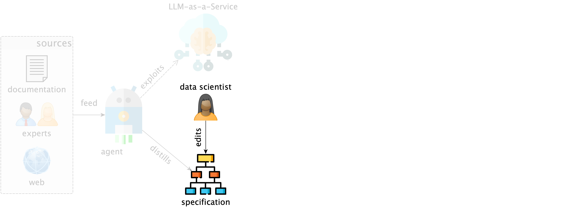
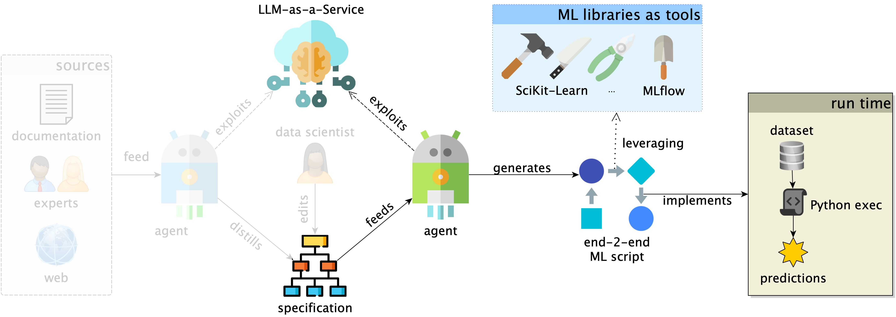
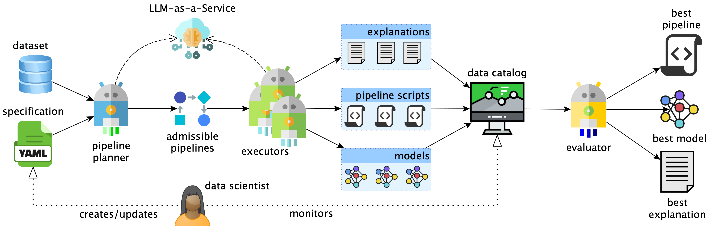
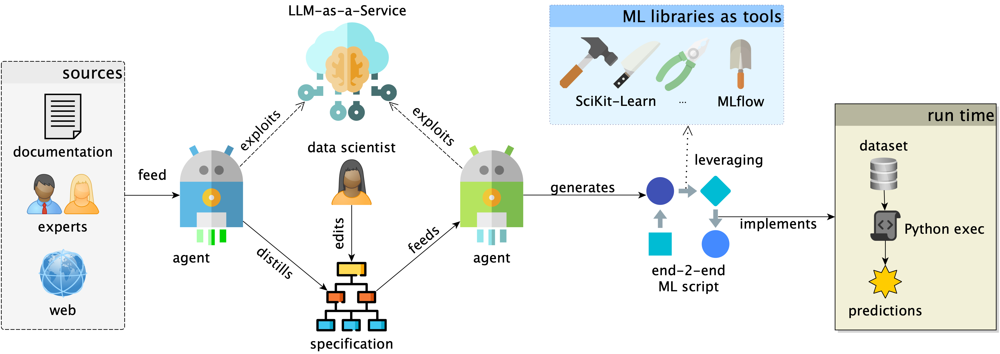
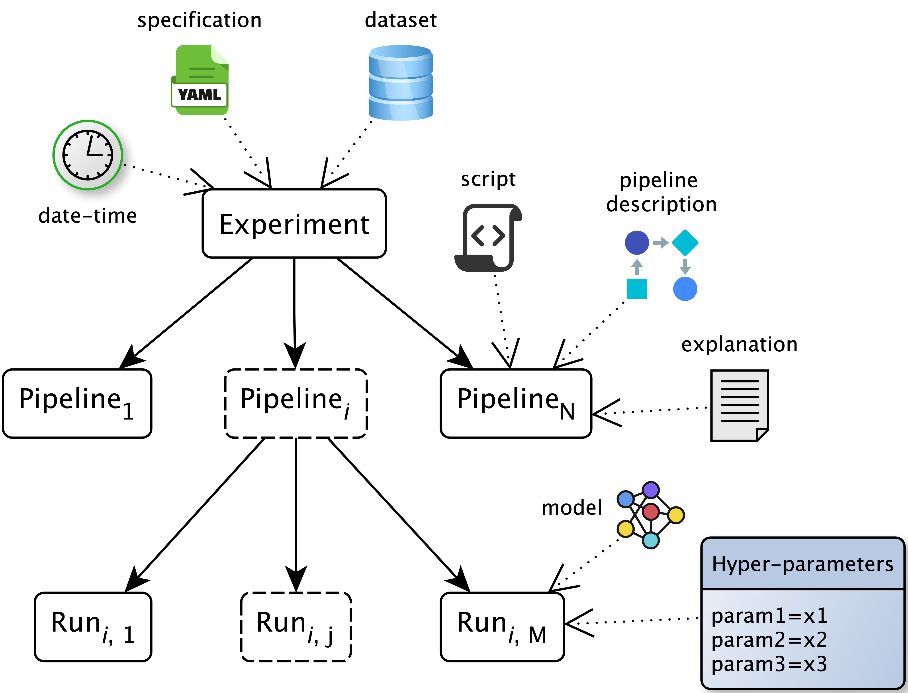
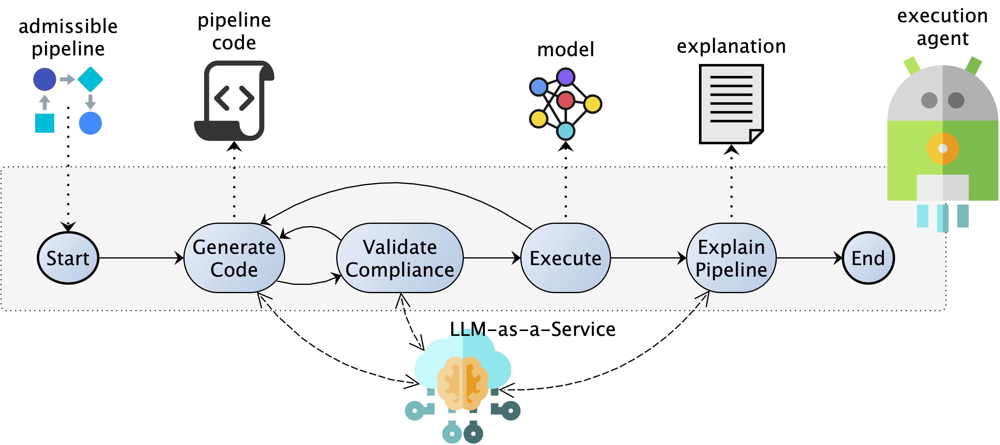

The 30th European Conference on Advances in Databases and Information Systems
\(^1\) University of Bologna, \(^2\) University of Luxembourg
Data-Centric AI shifts attention from only tuning models to improving the data and preprocessing choices that shape model behavior (Zha et al. 2025).
For practitioners, that means:
AutoML gives algorithmic search
Agentic AI gives generation and adaptation
Data scientists augment knowledge to drive selection and optimization
Given external domain knowledge (if any), LLM-powered agents distill human-readable specifications describing assumptions and constraints

Data scientists (and experts) can read, revise, and manually augment the specification

Planner and executor agents generate, validate, repair, and run pipelines under the constraints imposed by the specification.

Agentic architecture
Planner
Specification to admissible pipelines (admissibility as a finite-domain constraint satisfaction problem, Z3 to compute admissible pipelines).
Executor
From pipelines to code, runs, and explanations
Catalog
Collect scripts, metrics, artifacts, traces
Evaluator
Best model under the budget
| Feature | HAMLET (Francia et al. 2023) | FLAML (Wang et al. 2022) | DS-Agent (Guo et al. 2024) | AutoML-Agent (Trirat et al. 2025) | MLZero (Fang et al. 2025) | AGE-ML |
|---|---|---|---|---|---|---|
| End-to-end pipeline | Yes | No | Yes | Yes | Yes | Yes |
| Human-centered design | Yes | No | No | No | No | Yes |
| Constrained generation | Yes | Yes | No | No | No | Yes |
| Pipeline validation | Yes | No | Yes | Yes | Yes | Yes |
| Interpretable pipeline | No | No | Yes | Yes | Yes | Yes |
| Zero-data cold start | Yes | Yes | No | No | No | Yes |
| MLOps oriented | No | No | No | No | No | Yes |
AGE-ML is positioned as the approach that combines end-to-end automation, explicit constraints, pipeline validation, and MLOps-oriented traceability.
Evaluation setup
Results at a glance
Detailed results
| Task | Dataset | Gemini 3.1 FL | Baseline | Gemini 2.5 F |
|---|---|---|---|---|
| Classification | Wilt | 0.983 | 0.975 | 0.966 |
| Texture | 0.992 | 0.997 | 0.995 | |
| Madelon | 0.863 | 0.875 | 0.863 | |
| HAR | 0.987 | 0.959 | 0.981 | |
| Adult | 0.822 | 0.805 | 0.813 | |
| MNIST_784 | 0.972 | 0.972 | 0.966 | |
| Regression | California Housing | 67,675 | 69,838 | 69,331 |
| Ames Housing | 30,189 | 29,660.363 | 31,970 | |
| Auto MPG | 2.148 | 2.508 | 2.283 |
AGE-ML is competitive with state-of-the-art approaches while enabling human knowledge injection and traceable execution.
We need inspectable loop where human knowledge shapes what automation is allowed to do rather than a larger AutoML black box.
Current limitations
Future work

pipeline:
steps:
normalization:
candidates:
min-max:
params: {feature_range: [[0, 1]]}
classification:
mandatory: true
candidates:
knn:
params:
n_neighbors: [5, 11]
weights: [uniform, distance]
ordering:
- sequence: [imputation, normalization, features]
- {before: features, after: classification}
constraints:
- if: {step: {classification: knn}}
require: [normalization, features]
budgets:
pipelines: 5
generation_attempts: 10
Logging hierarchy
Every experiment records:
This gives MLOps-style provenance for agent-generated ML work.

Executor state machine
Generated code must pass two gates:
Failures become feedback for bounded repair attempts.
AGE-ML @ ADBIS 2026